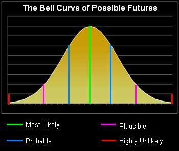
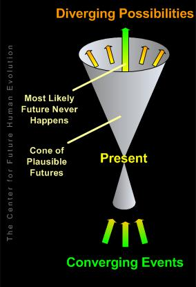
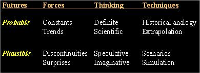
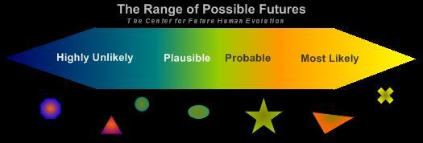

The Future
- Futures Portal
- One Future Vision
- Post Human Futures
- Distant Future
- Other Visions
- Future Homo Sapiens
- Future Quotes
Future Studies
Future Methodologies
Possible Futures: Probable, Plausible, and Highly Unlikely
Inspired by Dr. Peter Bishop's Introduction to Future Studies, WFS Conference 2005.

The Job of a Futurist
and the Goals of this Site
The job of any futurist is to consider the probable, the plausible and the very unlikely in order to challenge our assumptions. There are some futurists who also engage in presenting preferable futures.
The bell curve to the right depicts the range of possibilities. At the apex of the curve we have the most likely future based on current knowledge and expectations. At the tail end we have the highly unlikely. The actual future falls somewhere between the two.
Then why delve into the highly unlikely if it will not occur? Because to get to the highly unlikely, you have to take into consideration some "far out" assumptions. By doing so, the futurist challenges in-the-box thinking, helping to eliminate surprise.
The Cone of Plausible Futures

The image to the left is another view of possible futures, focusing on the plausible. Dr. Bishop uses this image to illustrate:
1. The present is made up a wide range of converging events.
2. The future has multiple possibilities based on the actions of many.
3. Plausible futures are more narrowly defined than possible futures, more broadly than probable.
4. The most likely future, the straight extrapolation, never happens. There is always an element of unpredictability.
Probable vs. Plausible Futures

The table to the right lists several distinctions between futures that are probable (more likely) and plausible (possible but less likely).
The Goal of this Site
So, how does all of this relate to the goal of this site? In accordance with the job of a futurist, we present factual information regarding the probable, we forecast events that are plausible, and we present speculation that is very unlikely in order to challenge your assumptions about the possible. When is a futurist successful? According to Dr. Bishop, "Success means no surprises." If we challenge your assumptions that life will be the same 20 years from now as it is today, we have been successful. If we motivate you to take positive action toward your preferable future, well, that's icing on the cake!

What does your preferable future look like?
Please visit our Futures Portal for more on future scenarios and futuring methods.
^ Top ^